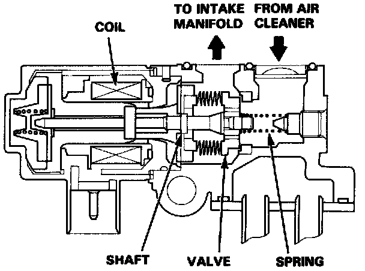

DTC 14

Self-diagnosis Check Engine light indicates code 14: A problem in the Electric Air Control Valve (EACV) Circuit.
The EACV changes the amount of air bypassing the throttle body in response to a current signal from the ECU in order to maintain the proper idle speed.